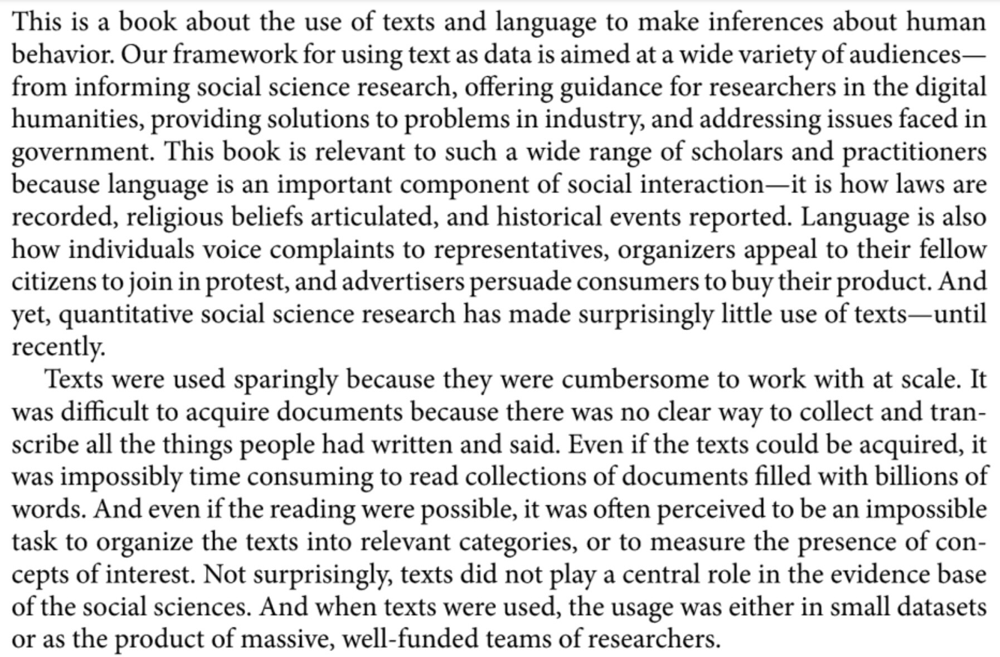
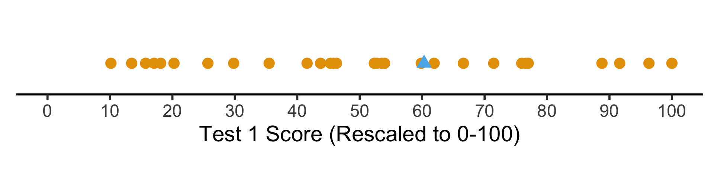
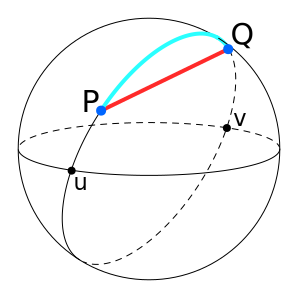
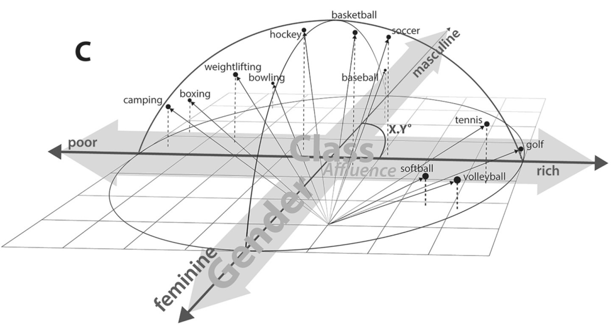
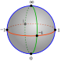
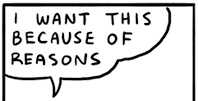
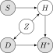

Week 6: Exploratory Data Analysis (EDA)
DSAN 5100: Data Science and Analytics
Section 02
Tuesday, September 26, 2023
NLP Recap



| doc_id | text |
texts |
Kékkek |
voice |
|
|---|---|---|---|---|---|
| 0 | 0 | 6 | 0 | 1 | |
| 1 | 0 | 0 | 3 | 1 | |
| 2 | 6 | 0 | 0 | 0 |
| doc_id | text |
kekkek |
voice |
||
|---|---|---|---|---|---|
| 0 | 6 | 0 | 1 | ||
| 1 | 0 | 3 | 1 | ||
| 2 | 6 | 0 | 0 |
Statistical EDA
- Iterative process: Ask questions of the data, find answers, generate more questions
- You’re probably already used to Mean and Variance: Fancier EDA/robustness methods build upon these two!
- Why do we need to visualize? Can’t we just use mean, \(R^2\)?
- …Enter Anscombe’s Quartet
Code
import pandas as pd
import numpy as np
import matplotlib.pyplot as plt
import seaborn as sns
sns.set_theme(style="ticks")
# https://towardsdatascience.com/how-to-use-your-own-color-palettes-with-seaborn-a45bf5175146
sns.set_palette(sns.color_palette(cb_palette))
# Load the example dataset for Anscombe's quartet
anscombe_df = sns.load_dataset("anscombe")
#print(anscombe_df)
# Show the results of a linear regression within each dataset
anscombe_plot = sns.lmplot(
data=anscombe_df, x="x", y="y", col="dataset", hue="dataset",
col_wrap=4, palette="muted", ci=None,
scatter_kws={"s": 50, "alpha": 1},
height=3
);
anscombe_plot;
The Scariest Dataset of All Time

Code
| dataset | x_mean | y_mean |
|---|---|---|
| I | 9.00 | 7.50 |
| II | 9.00 | 7.50 |
| III | 9.00 | 7.50 |
| IV | 9.00 | 7.50 |
Code
| x | y | ||
|---|---|---|---|
| dataset | |||
| I | x | 1.00 | 0.82 |
| y | 0.82 | 1.00 | |
| II | x | 1.00 | 0.82 |
| y | 0.82 | 1.00 | |
| III | x | 1.00 | 0.82 |
| y | 0.82 | 1.00 | |
| IV | x | 1.00 | 0.82 |
| y | 0.82 | 1.00 |
It Doesn’t End There…

Code
import statsmodels.formula.api as smf
summary_dfs = []
for cur_ds in ['I','II','III','IV']:
ds1_df = anscombe_df.loc[anscombe_df['dataset'] == "I"].copy()
# Fit regression model (using the natural log of one of the regressors)
results = smf.ols('y ~ x', data=ds1_df).fit()
# Get R^2
rsq = round(results.rsquared, 2)
# Inspect the results
summary = results.summary()
summary.extra_txt = None
summary_df = summary_to_df(summary, corner_col = f'Dataset {cur_ds}<br>R^2 = {rsq}')
summary_dfs.append(summary_df)
disp(summary_dfs[0], include_index=False)| Dataset I R^2 = 0.67 |
coef | std err | t | P>|t| | [0.025 | 0.975] |
|---|---|---|---|---|---|---|
| Intercept | 3 | 1.12 | 2.67 | 0.03 | 0.46 | 5.54 |
| x | 0.5 | 0.12 | 4.24 | 0 | 0.23 | 0.77 |
| Dataset III R^2 = 0.67 |
coef | std err | t | P>|t| | [0.025 | 0.975] |
|---|---|---|---|---|---|---|
| Intercept | 3 | 1.12 | 2.67 | 0.03 | 0.46 | 5.54 |
| x | 0.5 | 0.12 | 4.24 | 0 | 0.23 | 0.77 |
Scaling
The percentile places everyone at evenly-spaced intervals from 0 to 100:
Code
# https://community.rstudio.com/t/number-line-in-ggplot/162894/4
# Add a binary indicator to track "me" (student #8)
whoami <- 29
score_df <- score_df |>
mutate(is_me = as.numeric(id == whoami))
library(ggplot2)
t1_line_data <- tibble(
x = score_df$t1_pctile,
y = 0,
me = score_df$is_me
)
ggplot(t1_line_data, aes(x, y, col=factor(me), shape=factor(me))) +
geom_point(aes(size=g_pointsize)) +
scale_x_continuous(breaks=seq(from=0, to=100, by=10)) +
scale_color_discrete(c(0,1)) +
dsan_theme("half") +
theme(
legend.position="none",
#rect = element_blank(),
#panel.grid = element_blank(),
axis.title.y = element_blank(),
axis.text.y = element_blank(),
axis.line.y = element_blank(),
axis.ticks.y=element_blank(),
panel.spacing = unit(0, "mm"),
plot.margin = margin(-35, 0, 0, 0, "pt"),
) +
labs(
x = "Test 1 Percentile"
) +
coord_fixed(ratio = 100)But what if we want to see their absolute performance, on a 0 to 100 scale?
Code
library(scales)
score_df <- score_df |>
mutate(
t1_rescaled = rescale(
t1_score,
from = c(t1_min, t1_max),
to = c(0, 100)
),
t2_rescaled = rescale(
t2_score,
from = c(t2_min, t2_max),
to = c(0, 100)
)
)
# Place "me" last so that it gets plotted last
t1_rescaled_line_data <- tibble(
x = score_df$t1_rescaled,
y = 0,
me = score_df$is_me
) |> arrange(me)
ggplot(t1_rescaled_line_data, aes(x,y,col=factor(me), shape=factor(me))) +
geom_point(size=g_pointsize) +
scale_x_continuous(breaks=seq(from=0, to=100, by=10)) +
dsan_theme("half") +
expand_limits(x=c(0, 100)) +
theme(
legend.position="none",
#rect = element_blank(),
#panel.grid = element_blank(),
axis.title.y = element_blank(),
axis.text.y = element_blank(),
axis.line.y = element_blank(),
axis.ticks.y=element_blank(),
#panel.spacing = unit(0, "mm"),
#plot.margin = margin(-40, 0, 0, 0, "pt"),
) +
labs(
x = "Test 1 Score (Rescaled to 0-100)"
) +
coord_fixed(ratio = 100)

Distance Metrics




Why Should We Worry About This?


Distances Are Metaphors We Use To Accomplish Something

Image Credit: Peter Dovak
Which Metric(s) Should We Use?

\(L^p\)-norm:
\[ || \mathbf{x} - \mathbf{y} ||_p = \left(\sum_{i=1}^n |x_i - y_i|^p \right)^{1/p} \]
Edit Distance, e.g., Hamming distance:
\[ \begin{array}{c|c|c|c|c|c} x & \green{1} & \green{1} & \red{0} & \red{1} & 1 \\ \hline & ✅ & ✅ & ❌ & ❌ & ✅ \\\hline y & \green{1} & \green{1} & \red{1} & \red{0} & 1 \\ \end{array} \; \leadsto d(x,y) = 2 \]
KL Divergence (Probability distributions):
\[ \begin{align*} \kl(P \parallel Q) &= \sum_{x \in \mathcal{R}_X}P(x)\log\left[ \frac{P(x)}{Q(x)} \right] \\ &\neq \kl(Q \parallel P) \; (!) \end{align*} \]
Top Secret Non-Well-Defined Yet Useful Norms
- The “\(L^0\)-norm”
\[ || \mathbf{x} - \mathbf{y} ||_0 = \mathbf{1}\left[x_i \neq y_i\right] \]
- The “\(L^{1/2}\)-norm”
\[ || \mathbf{x} - \mathbf{y} ||_{1/2} = \left(\sum_{i=1}^n \sqrt{x_i - y_i} \right)^2 \]
- What’s wrong with these norms? (Re-)enter the Triangle Inequality! \(d\) defines a norm iff
\[ \forall a, b, c \left[ d(a,c) \leq d(a,b) + d(b,c) \right] \]
Visualizing “circles” in \(L^p\) space:
Code
import matplotlib.pyplot as plt
import numpy as np
#p_values = [0., 0.5, 1, 1.5, 2, np.inf]
p_values = [0.5, 1, 2, np.inf]
x, y = np.meshgrid(np.linspace(-3, 3, num=101), np.linspace(-3, 3, num=101))
fig, axes = plt.subplots(ncols=(len(p_values) + 1)// 2,
nrows=2, figsize=(5, 5))
for p, ax in zip(p_values, axes.flat):
if np.isinf(p):
z = np.maximum(np.abs(x),np.abs(y))
else:
z = ((np.abs((x))**p) + (np.abs((y))**p))**(1./p)
ax.contourf(x, y, z, 30, cmap='bwr')
ax.contour(x, y, z, [1], colors='red', linewidths = 2)
ax.title.set_text(f'p = {p}')
ax.set_aspect('equal', 'box')
plt.tight_layout()
#plt.subplots_adjust(hspace=0.35, wspace=0.25)
plt.show()
The Value of Studying
- You are a teacher trying to assess the causal impact of studying on homework scores
- Let \(S\) = hours of studying, \(H\) = homework score

- So far so good: we could estimate the relationship via (e.g.) regression
\[ h_i = \beta_0 + \beta_1 s_i + \varepsilon_i \]
My Dog Ate My Homework Because of Reasons

There are scarier alternatives, though! What if…
Dogs eat homework because their owner studied so much that the dog got ignored?

Dogs hate sloppy work, and eat bad homework that would have gotten a low score

Noisy homes (\(Z = 1\)) cause dogs to get agitated and eat homework more often, and students do worse

Driving the Point Home

Presumed DGP:

Actual DGP: